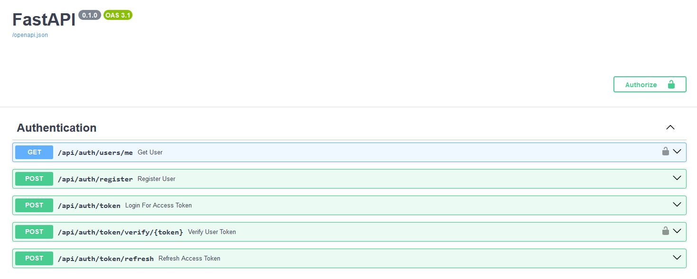

First Steps¶
Our first step is a simple one: create a new project.
Zentra makes this extremely easy and provides a lot of functionality out of the box (What's Included?).
Creating a Project¶
To create a new project we use the init command with a custom <project_name> like so:
1 | |
After a few seconds, you'll find a new project in your directory with the following file structure:
| Folder Structure | |
|---|---|
1 2 3 4 5 6 7 8 9 10 11 12 13 14 15 16 17 18 19 20 21 22 23 | |
This may look daunting at first, but don't worry, we'll break it down for you!
Configuration Files¶
Tip
Already been here and know about the files? Skip to Starting Our Project ✨
To start with, let's explore our main configuration files. You'll likely only touch these occassionally, specifically at the start of the project and towards the end when moving into production.
Here's are configuration files:
| Folder Structure | |
|---|---|
1 2 3 4 5 6 7 8 9 | |
- Our pytest [] coverage file, strictly used for testing purposes to identify the line coverage for our project. This is updated automatically and should never be manually edited.
-
Our environment variable file. A fundamental file to securing our sensitive information such as API keys and database details.
We recommend you get familiar with this and update any information you need to. We'll talk about this in more detail shortly.
-
A Git [] version control file used to ignore specific files and directories from being pushed to platforms like GitHub. Feel free to explore this at your own leisure.
- Our Alembic [] configuration file, used for database migration tracking. We've configured this to work with new projects automatically.
- Our Poetry [] configuration file. This handles all of our project details and Python dependencies. We'll make some changes to this shortly.
- Our main Markdown [] file for explaining more about the project. You can think of this as the face of the project. This is the first thing users will see when you publish your project to places like GitHub [] and PyPi [].
- A
Zentraconfiguration file to detect the root of your directory. This is used by the CLI to allow commands to be accessed anywhere in your project.
To keep things simple, we'll only focus on the main configuration files you need to address, but if you need more information you can check the + marks above.
Most of the files are already pre-configured with your new project, but we do need to make some minor tweaks to make it unique to you!
Poetry Configuration (pyproject.toml)¶
Example pyproject.toml
1 2 3 4 5 6 7 8 9 10 11 12 13 14 15 16 17 18 19 20 21 22 23 24 25 26 27 28 | |
Starting with the pyproject.toml file there is one major change you need to make - the authors. Make this bad boy unique to you 🤩!
| pyproject.toml | |
|---|---|
1 2 3 4 5 6 7 | |
- Update me!
The rest of the file is pretty common with the exception of tool.poetry.scripts and the project name.
The name is directly tied to the app directory and should only be changed when desperately needed. We use the name app by convention to indicate your application code.
Warning
Changing the app name may break other parts of the project, such as Alembic so change it at your own risk.
The poetry.scripts are unique commands to your project and are connected to the scripts directory. They won't actually work yet until you install them (we'll get to that soon!).
Interested in what they do? Check out the Poetry Scripts page.
Environment Variables (.env file)¶
The .env file is an essential piece of the project for connecting the database and managing private information like API keys.
Here's an example of what yours might look like with a project name of deep_dive:
| .env | |
|---|---|
1 2 3 4 5 6 7 8 9 10 11 12 13 14 15 16 17 18 19 20 21 22 23 24 25 26 27 28 29 30 31 32 33 34 | |
The 😎 part about this file is that the highlighted lines are randomly generated on project creation. Zentra does all the work for you! ✨
Tip
Desperately need a new SECRET_KEY or PASSWORD? Use the new-key CLI commmand! 😏
To start with, you won't need to change this file unless you have a specific database in mind. By default we use a SQLite [] database with SQLAlchemy [] for development.
In fact, we encourage and recommend you start with this approach and then transition to a PostgreSQL [] database during production. It's the easiest to transition to and integrates seamlessly with our project setup.
Tests Directory¶
| Test Folder | |
|---|---|
1 2 3 4 5 6 7 | |
Home to your Pytest [] unit tests and other testing code.
It already has a few files inside, one for user authentication (test_auth.py) and another for database (conftest.py) tests. These are generated automatically whenever you build a new API project to help you dive straight into your own code immediately.
We encourage you to add to this folder when building up your application. We have a few plans to make testing easier in future versions, so stay tuned for that!
Migrations Directory¶
| Migrations Folder | |
|---|---|
1 2 3 4 5 6 7 | |
A place for your Alembic [] database migrations.
We've preconfigured this directory to work out of the box with your project, but you will need to make minor additions to the env.py file when making new database tables.
It's extremely easy to do, you only need to add import statements at the top of the file like the below:
| migrations/env.py | |
|---|---|
1 2 3 4 5 6 7 8 9 10 11 12 13 | |
This helps Alembic know which database tables it needs to manage. Admittedly, we sometimes forget to add this ourselves! 😅 So, we plan to automate this in a future version.
Scripts Directory¶
A folder dedicated to poetry.scripts used in the project.
You can read more about this in the Poetry Scripts page.
App Directory¶
Saving the best for last, our application directory! Home to all of your API code, you'll be working in this folder constantly. From building new routes to database tables this folder really is the workhorse of the operation.
Here's what it looks like:
| App Directory | |
|---|---|
1 2 3 4 5 6 7 8 9 10 11 12 13 14 15 16 17 | |
This folder starts with four directories:
api- a place to store all your API routes. We'll explore this in more detail in the next chapter - Creating Routes.auth- files dedicated to user authentication. We discuss more about this in the Authentication chapter.core- this contains all of our configuration settings for the project. Check out the Project Settings chapter for more details.db_models- our one-stop shop for our SQLAlchemy [] database models. We discuss this in more detail in the Creating Tables chapter.
Starting Our Project¶
Whew! Okay, that was a lot to digest! Now that we have installed the project and are more familiar with it, we should probably check that our project works right?
-
Firstly, access the project directory:
Using
zentra-sdk?Access the FastAPI project using this instead:
1cd backend1cd <project_name> -
Next, install the poetry scripts and extra packages:
1poetry install -
Test it works by running the development environment:
1run-dev -
Navigate to http://localhost:8080/api/docs and you should see your authentication routes already configured!

Awesome work! 👏 In the next chapter we'll start building some API routes. See you there!